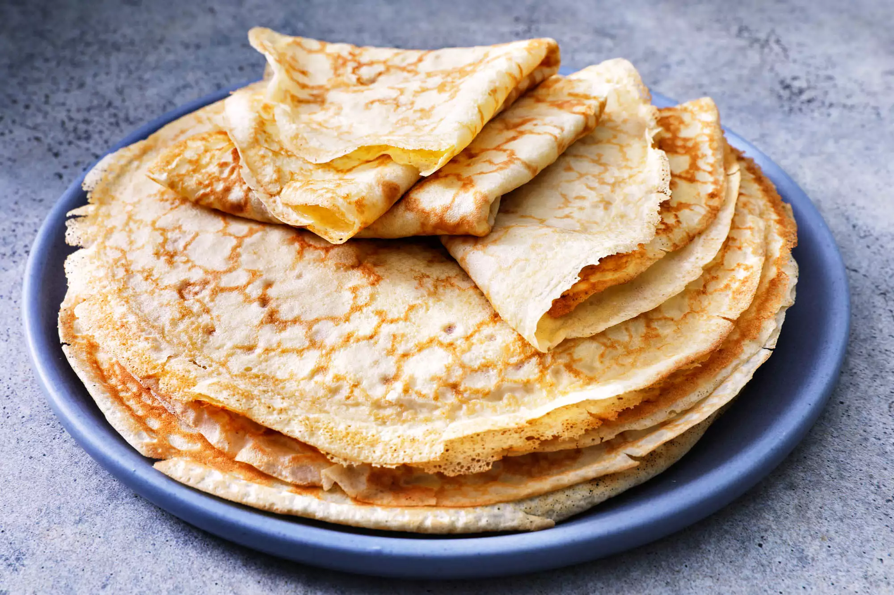

French Crepes

Ingredients
1 cup AP flour
1 tsp sugar
½ tsp salt
3 eggs
2 cups milk
2 tbl spn melted butter
Steps
Sift together flour, sugar, and salt; set aside. Beat eggs and milk together in a large bowl with an electric
mixer.
Beat in flour mixture until smooth; stir in melted butter.
Heat a lightly oiled griddle or frying pan over medium-high heat.
Pour or scoop the batter onto the griddle, using approximately 2 tablespoons for each crepe.
Tip and rotate pan to spread batter as thinly as possible.
Brown on both sides. Repeat with remaining batter. Serve hot.